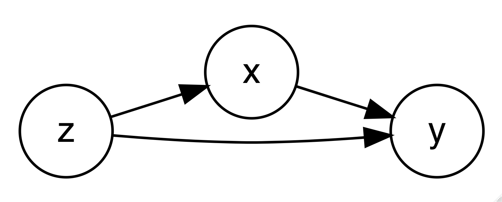

12 Jun 2022 08:53:08
In web slide versions of this material press
bfor bigger text andsfor smaller text.
Chihara and Hesterberg (2018) provide a data set concerning the growth of Black Spruce Trees. According to these authors:
“Black spruce (Picea mariana) is a species of a slow-growing coniferous tree found across the northern part of North America. It is commonly found on wet organic soils. In a study conducted in the 1990s, a biologist interested in factors affecting the growth of the black spruce planted its seedlings on sites located in boreal peatlands in northern Manitoba, Canada (Camil et al. (2010)). The data set Spruce contains a part of the data from the study (Table 1.8). Seventy-two black spruce seedlings were planted in four plots under varying conditions (fertilizer–no fertilizer, competition–no competition), and their heights and diameters were measured over the course of 5 years. The researcher wanted to see whether the addition of fertilizer or the removal of competition from other plants (by weeding) affected the growth of these seedlings.”
We are going to consider the potentially causal estimate of the effect of fertilizer on tree height at year 5. Along the way we will give brief attention to the advantages and disadvantages of each approach. Because of the research design, we have strong reasons to consider fertilizer as having a causal effect on tree height but we will nonetheless explore this question using a variety of statistical models.
A secondary purpose of this document is to demonstrate that Stata syntax makes it easy to test and compare multiple statistical models because of the uniform Stata syntax, which is almost always:
command variable(s), options.

A variable \(x\) can only be considered to have causal association with \(y\) if the following conditions are met (Holland, 1986):
Hence, for this particular data, we are exploring:
What happens to the association of fertilizer and tree height when we control for possible confounding variables \(z\) using various statistical strategies?
(For more interactive exploration of these ideas, see this demo).
. clear all . . use spruce.dta, clear
. describe
Contains data from spruce.dta
Observations: 72
Variables: 9 26 Apr 2020 12:18
──────────────────────────────────────────────────────────────────────────────────────────
Variable Storage Display Value
name type format label Variable label
──────────────────────────────────────────────────────────────────────────────────────────
Tree long %12.0g Tree number
Competition long %12.0g Competition
C (competition), CR (competition removed)
Fertilizer long %12.0g Fertilizer
F (fertilized), NF (not fertilized)
Height0 double %10.0g Height (cm) of seedling at planting
Height5 double %10.0g Height (cm) of seedling at year 5
Diameter0 double %10.0g Diameter (cm) of seedling at planting
Diameter5 double %10.0g Diameter (cm) of seedling at year 5
Ht_change double %10.0g Change (cm) in height
Di_change double %10.0g Change (cm) in diameter
──────────────────────────────────────────────────────────────────────────────────────────
Sorted by:
Let’s consider in turn each of the criteria for causality.
ttest y, by(x))A t test compares the difference between the means of two groups to the standard error of the difference between means.
Formally, \(t = \frac{\bar{x}_2 - \bar{x}_1}{s}\) where s is the standard error of the estimate of the mean.
More colloquially, the t test compares the differences between the two groups in standard error units.
A t test does not control for any additional variable(s).
. ttest Height5, by(Fertilizer)
Two-sample t test with equal variances
─────────┬────────────────────────────────────────────────────────────────────
Variable │ Obs Mean Std. err. Std. dev. [95% conf. interval]
─────────┼────────────────────────────────────────────────────────────────────
F │ 36 52.89167 1.396079 8.376476 50.05747 55.72586
NF │ 36 38.11944 1.465226 8.791354 35.14488 41.09401
─────────┼────────────────────────────────────────────────────────────────────
Combined │ 72 45.50556 1.333392 11.31421 42.84685 48.16426
─────────┼────────────────────────────────────────────────────────────────────
diff │ 14.77222 2.023839 10.7358 18.80864
─────────┴────────────────────────────────────────────────────────────────────
diff = mean(F) - mean(NF) t = 7.2991
H0: diff = 0 Degrees of freedom = 70
Ha: diff < 0 Ha: diff != 0 Ha: diff > 0
Pr(T < t) = 1.0000 Pr(|T| > |t|) = 0.0000 Pr(T > t) = 0.0000
The association of fertilizer with tree height is -14.77.
regress y x1 x2 x3)A regression estimates the association of a 1 unit change in each of the independent variables with change in the dependent variable, while accounting for all of the other independent variables in the model.
\(y_i = \beta_0 + \beta_1 x_{1i} + \Sigma \beta_k x_{ki} + e_i\)
Here \(x_{1i}\) is the treatment variable of interest.
A regression controls for the additional observed variables (\(x_{ki}\)) that are included in the model.
. regress Height5 Fertilizer Height0 Competition
Source │ SS df MS Number of obs = 72
─────────────┼────────────────────────────────── F(3, 68) = 50.97
Model │ 6291.23189 3 2097.0773 Prob > F = 0.0000
Residual │ 2797.56589 68 41.1406748 R-squared = 0.6922
─────────────┼────────────────────────────────── Adj R-squared = 0.6786
Total │ 9088.79778 71 128.011236 Root MSE = 6.4141
─────────────┬────────────────────────────────────────────────────────────────
Height5 │ Coefficient Std. err. t P>|t| [95% conf. interval]
─────────────┼────────────────────────────────────────────────────────────────
Fertilizer │ -14.71947 1.511991 -9.74 0.000 -17.73661 -11.70234
Height0 │ .8631456 .374817 2.30 0.024 .11521 1.611081
Competition │ 10.52346 1.52143 6.92 0.000 7.48749 13.55942
_cons │ 39.22163 6.189971 6.34 0.000 26.86974 51.57353
─────────────┴────────────────────────────────────────────────────────────────
The association of fertilizer with tree height is -14.72.
teffects psmatch (y) (t x1 x2))The propensity score uses a logistic regression to estimate the
predicted probability of being administered the treatment
(t in the above syntax), in this example,
fertilizer. Treatment observations are matched to the most
similar comparison group observation in terms of this probability, and
an average difference is calculated.
A propensity score analysis controls for the additional observed variables that are included in the model.
. teffects psmatch (Height5) (Fertilizer Height0 Competition)
Treatment-effects estimation Number of obs = 72
Estimator : propensity-score matching Matches: requested = 1
Outcome model : matching min = 1
Treatment model: logit max = 3
─────────────┬────────────────────────────────────────────────────────────────
│ AI robust
Height5 │ Coefficient std. err. z P>|z| [95% conf. interval]
─────────────┼────────────────────────────────────────────────────────────────
ATE │
Fertilizer │
(NF vs F) │ -12.71019 1.988531 -6.39 0.000 -16.60763 -8.812737
─────────────┴────────────────────────────────────────────────────────────────
The association of fertilizer with tree height is -12.71.
With many thanks to Jorge Cuartas for ideas for some of this code.
. tebalance density, /// > scheme(michigan) (refitting the model using the generate() option) . . graph export mydensity.png, width(500) replace file /Users/agrogan/Desktop/GitHub/teaching/spruce/mydensity.png saved as PNG format
Camill, P., Chihara, L., Adams, B., Andreassi, C., Barry, A. N. N., Kalim, S., … Rafert, G. (2010). Early life history transitions and recruitment of Picea mariana in thawed boreal permafrost peatlands. Ecology. https://doi.org/10.1890/08-1839.1
Chihara, L. M., & Hesterberg, T. C. (2018). Mathematical Statistics with Resampling and R. https://doi.org/10.1002/9781119505969
Holland, P. W. (1986). Statistics and Causal Inference. Journal of the American Statistical Association, 81(396), 945–960. https://doi.org/10.1080/01621459.1986.10478354